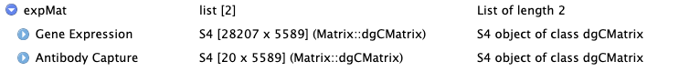
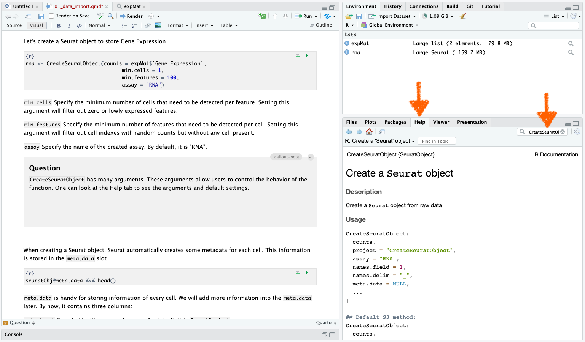
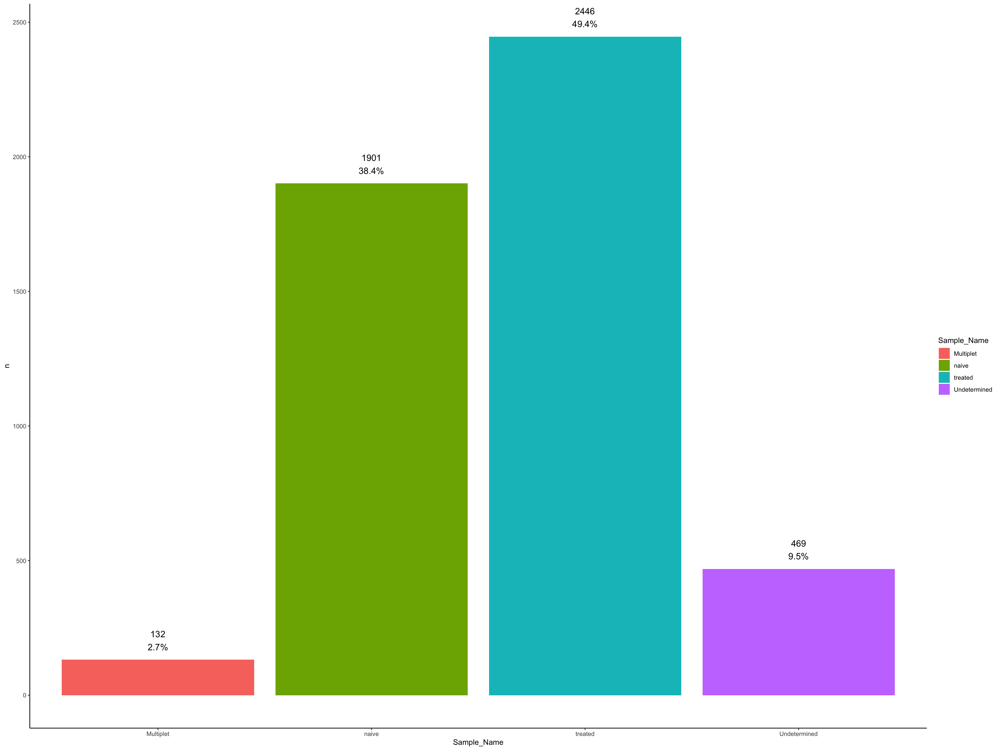

Chapter 1 Data Import
Demo data
The demo data is generated from freshly isolated human PBMCs. The PBMCs were grown for 24 hours in the presence of CD3/CD28 stimulation (“treated”) and compared to PBMCs grown for 24 hours in regular media (“naive”). Cells were then labeled with a 20plex AbSeq panel consisting of lineage markers and T-cell activation markers, as well as unique Sample Tags from the BD Rhapsody™ Human Single Cell Multiplexing Kit (resting PBMC: ST1; treated PBMC: ST2). The cells were mixed at a 1:1 ratio and processed using the BD Rhapsody™ Single-Cell Analysis System. Sequencing libraries for RNA and AbSeq antibodies were generated using the BD Rhapsody WTA Amplification kit.
Please review the setup chapter to ensure that R packages are installed and data is downloaded.
1. Data import
The expression matrix stores the UMI counts of a feature (gene or protein). Depending on the single cell platform, common format of expression matrix include CSV, MEX (Market Exchange) or H5AD.
Rhapsody single cell platform outputs expression matrix in two formats: MEX and H5AD.
We import MEX using the function from Seurat, Read10x. We assign a name to the created object, expMat (expression Matrix).
The expression matrix in Rhapsody v1 pipeline is in CSV format. If you run Rhapsody v2.0 pipeline, the expression matrix is available in MEX format.
expMat <- Read10X("data/raw_data/WTA-AB-SMK-v2-0_DBEC_MolsPerCell_MEX/",
gene.column = 2,
cell.column = 1,
unique.features = TRUE)Click on the expMat on the right.

A window will pop up and you should be able to see the structure of expMat.

expMat contains two matrices: Gene Expression and Antibody Capture. You may recall that the demo dataset has two assays: WTA, whole transcriptome analysis, to capture Gene Expression; and AbSeq for Antibody Capture.
We will first focus on Gene Expression.
Take a look at the first 5 rows X first 5 columns of Gene Expression matrix. It is organized as feature X cell. The row names are gene names. The column names are cell labels.
expMat$`Gene Expression`[1:5, 1:5]5 x 5 sparse Matrix of class "dgCMatrix"
74 391 440 1222 2690
A1BG . . . . .
A1BG-AS1 . . . . .
A1CF . . . . .
A2M . . . . .
A2M-AS1 . . . . .What are the dots “.” in the matrix?
The “.” corresponds to 0.
scRNA-seq usually contains many zeros. The zeros can come from:
Stochastic gene expression.
Limitation of single cell technology: On average, 5 - 8% of mRNA transcripts can be captured by the technology.
2. Create a Seurat object to store Gene Expression
Let’s create a Seurat object to store Gene Expression and assign “rna” as the object name.
rna <- Seurat::CreateSeuratObject(counts = expMat$`Gene Expression`,
min.cells = 1,
min.features = 100,
assay = "RNA")min.cells Specify the minimum number of cells that needs to be detected per feature. Setting this argument will filter out zero or lowly expressed features.
min.features Specify the minimum number of features that need to be detected per cell. Setting this argument will filter out cell labels with low feature counts.
assay Specify the name of the created assay. By default, it is “RNA”.
CreateSeuratObject has many arguments in the function. These arguments allow users to control the behavior of the function. One can look at the Help tab to see the arguments and their default settings.

::
Here, we define the function together with its associated package. We do that by the syntax package::function. Of course, you can also call library(package), and only type the function name. Since we use many different packages in this course, it can be confusing which function comes from which package. Therefore, we associate the package with the called function.
When creating a Seurat object, Seurat automatically creates some metadata for each cell. This information is stored in the meta.data slot.
rna@meta.data %>% head orig.ident nCount_RNA nFeature_RNA
74 SeuratProject 2389 1135
391 SeuratProject 5252 2088
440 SeuratProject 1205 630
1222 SeuratProject 2390 1152
2690 SeuratProject 1533 810
2782 SeuratProject 1106 105meta.data stores information related to each cell. We will add more information into the meta.data later. For now, it contains three columns:
orig.identSample identity or sample name. By default, it is “SeuratProject”.nCount_RNAUMI counts per gene per cell.nFeature_RNAGenes counts per cell.
3. Add sample multiplexing kit into meta.data
The demo dataset has Sample Multiplexing Kit (SMK) to pool two samples on one cartridge.
To demultiplex the samples, one can use the table “Demo-WTA-AbSeq-SMK_Sample_Tag_Calls.csv”.
smk <- fread(file = "data/raw_data/WTA-AB-SMK-v2-0_Sample_Tag_Calls.csv",
sep = ",",
header=TRUE) %>%
data.frame(row.names = 1)Let’s look at the first 5 rows of the created object smk.
smk[1:5, ] Sample_Tag Sample_Name
74 SampleTag01_hs naive
391 SampleTag02_hs treated
440 SampleTag01_hs naive
1222 SampleTag01_hs naive
2690 SampleTag01_hs naivesmk is a matrix with two columns. The row names are the cell labels.
Sample_Tag: Which tag the cell belongs to.Sample_Name: Which sample the cell belongs to.
We can add the cell assignment into the meta.data of the Seurat object by AddMetaData.
rna <- AddMetaData(object = rna, metadata = smk) orig.ident nCount_RNA nFeature_RNA Sample_Tag Sample_Name
74 SeuratProject 2389 1135 SampleTag01_hs naive
391 SeuratProject 5252 2088 SampleTag02_hs treated
440 SeuratProject 1205 630 SampleTag01_hs naive
1222 SeuratProject 2390 1152 SampleTag01_hs naive
2690 SeuratProject 1533 810 SampleTag01_hs naive
2782 SeuratProject 1106 105 Multiplet MultipletNow we know which cell belongs to which sample.
4. Remove Multiplet and Undetermined
The Multiplet are cell labels with more than one SMK tags. They could be Multiplets from one microwell containing two cells, or single cells with high ambient SMK noise.
The Undetermined are cell labels without sufficient SMK tag reads. They could be noisy cell labels, or single cells without SMK tag reads.
rna@meta.data %>%
group_by(Sample_Name) %>%
tally() %>%
mutate(pct = n/sum(n)) %>%
ggplot(aes(x=Sample_Name, y=n, fill= Sample_Name)) +
geom_bar(stat = "identity") +
geom_text(aes(y = n,
label = paste0(n, "\n", scales::percent(pct)),
vjust= -0.5, size = 2.5), show.legend = FALSE) +
theme_classic()
Multiplet and Undetermined are removed from the downstream analysis by subset.
5. Save
Save the files into RData for documentation.
# save.image("data/intermediate_data/chapter1.RData")